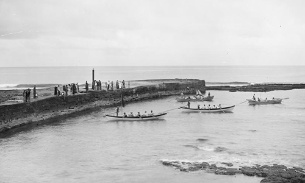
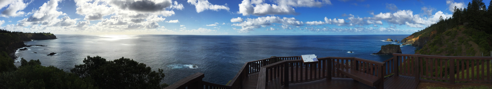

Kingston Pier
Locations of KAVHA
When was it built?
Work began on the pier in 1839 under the supervision of the Royal Engineer, Lieutenant Lugard. Building finished in 1849 but it was never completed to its original design. Much of the work was done by convicts who had committed additional offences on Norfolk Island. They often worked up to their waists in seawater, wearing heavy chains weighing up to 16kgs. They quarried rock from underwater and broke it up for use.
Its uses during the First Settlement
During the First Settlement, landings occurred to the west of the current pier.
Its uses during the Second Settlement
It was built during the Second Settlement to give improved conditions for landing things on the island. Its curved shape was designed to reduce the strength of the waves. As waves hit the pier, they are reflected off at 90o, losing much of their energy.
Its uses during the Third Settlement
The Pitcairners landed on the pier on the 8th June 1856. It continued to be used as the main pier.
Its uses today
The pier has been repaired regularly but it still is the same size and shape it was when it was completed.
The davit on the pier lifts fishing boats in and out of the water.
It is still used today for landing things that come to Norfolk Island by boat. It is one of the two sites that fishing boats leave from and is also a popular fishing spot for anglers.